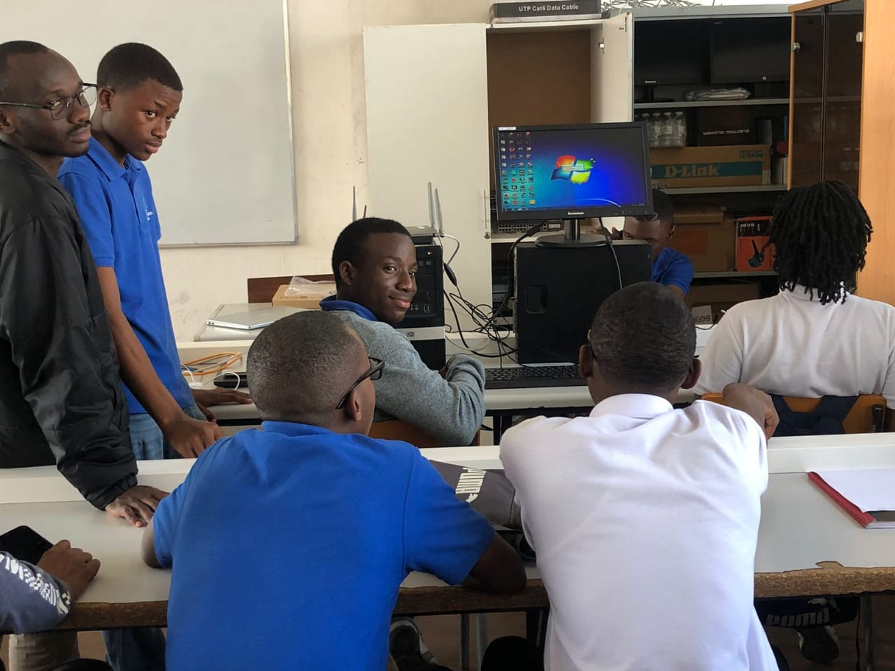
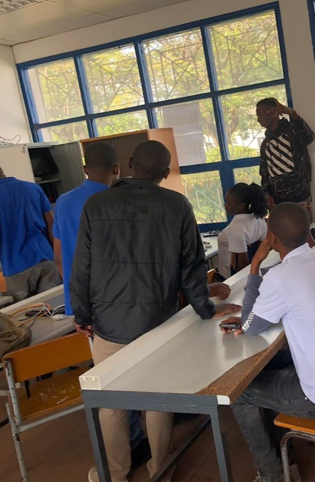

Manutenção de Computadores e Hardware
Este projecto teve a participação de outros colegas e o objectivo foi veficar e
solucinar possiveis avarias de computador.
Tivemos como material de trabalho alguns computadores
switches e routers.
Imangens Ilustrativas do Projecto

